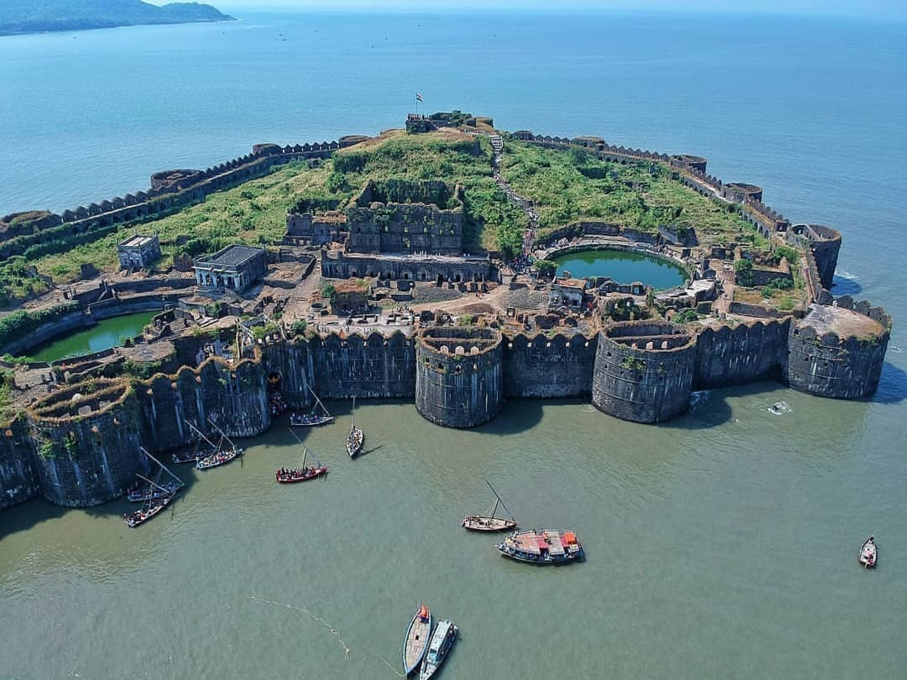
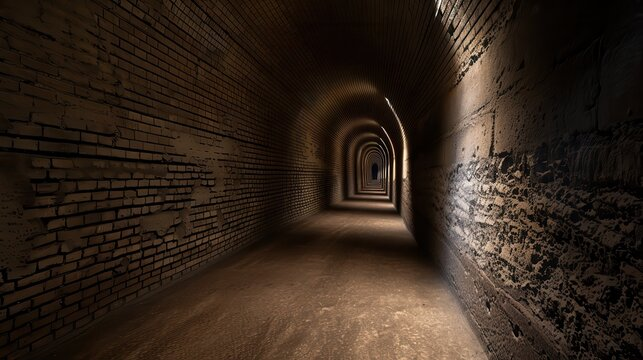
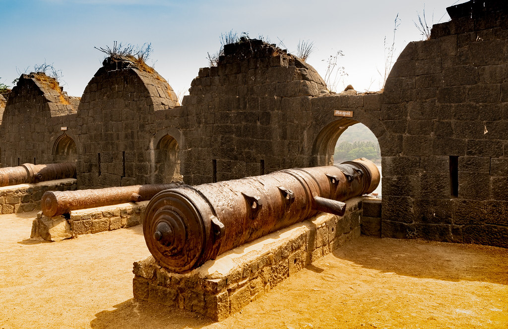
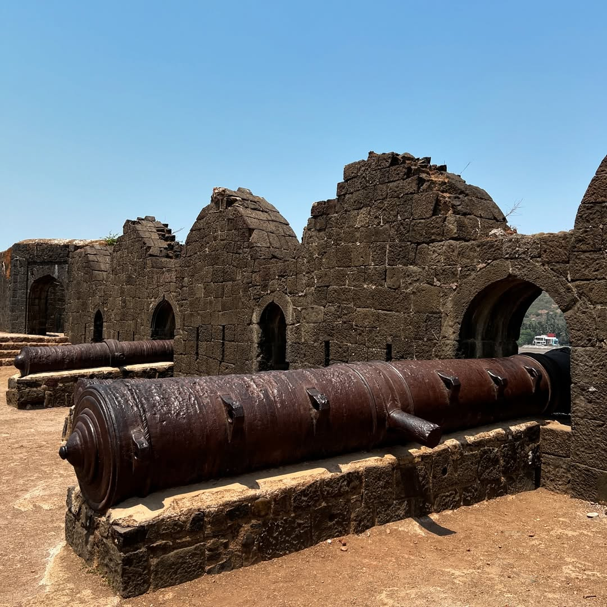
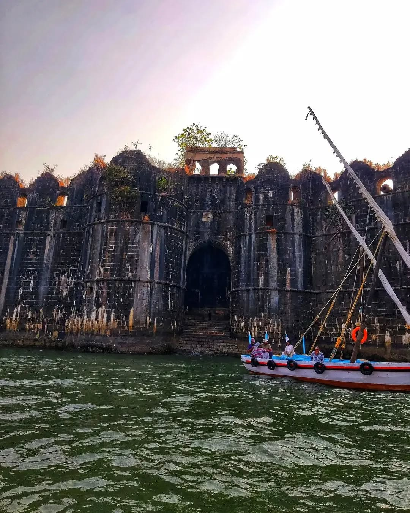
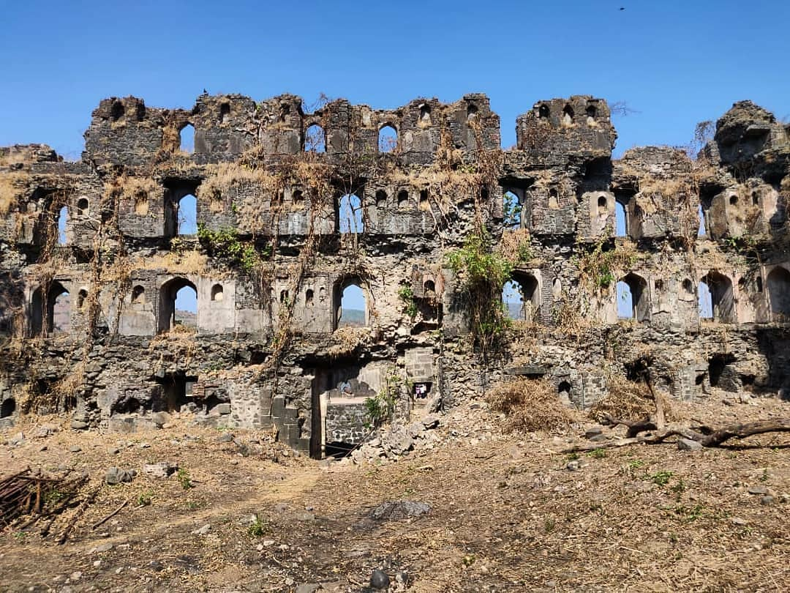
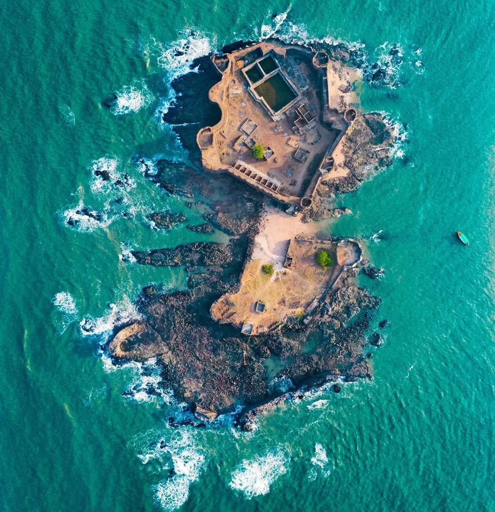
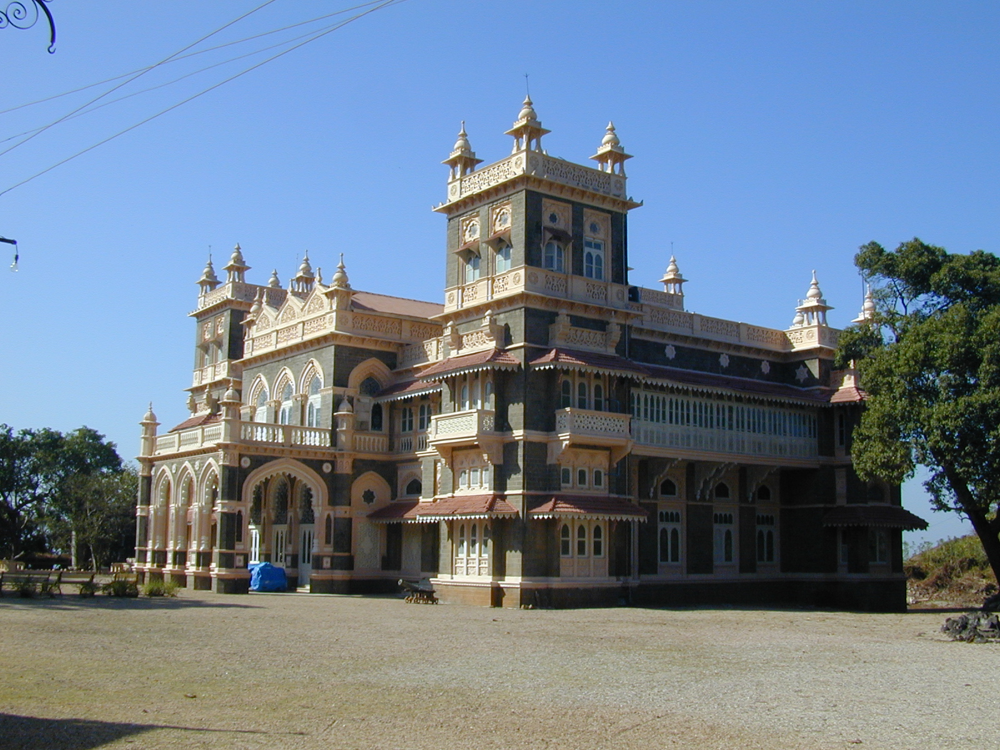

Murud-Janjira Fort




Murud-Janjira Fort, a 15th-century architectural masterpiece, is situated on an oval-shaped rock island off the coast of Murud in Maharashtra. Known for its strategic brilliance and impenetrable design, the fort was originally built by local fishermen and later fortified by the Siddi dynasty under Siddi Johar. It served as a formidable defense structure against invaders and pirate attacks. The fort features 19 rounded bastions, some still equipped with massive cannons like the famous "Kalal Bangdi." A remarkable feature of the fort is its concealed main entrance, which is visible only when approached closely, showcasing its tactical ingenuity. The fort also boasts several freshwater wells within its walls, a rarity for sea forts, and an advanced drainage system that highlights its engineering excellence. Murud-Janjira’s resilience is legendary, as it withstood multiple invasion attempts by the Portuguese, British, and Marathas, earning a reputation as the "Undefeated Fort." Its architecture blends Indian, Persian, and European styles, reflecting the diverse influences of its time. Today, it is a popular tourist destination, accessible by boat and offering panoramic views of the Arabian Sea. Visitors are captivated by its historical significance, breathtaking scenery, and the timeless stories of its enduring strength.
Murud-Janjira, known as "Ajinkya Killa", stayed undefeated, repelling attacks from the Marathas, British, Dutch, and Portuguese. Its strategic location and defenses made it an unconquerable fortress and a symbol of resilience.

The fort features a hidden escape tunnel linking it to the mainland, offering secure passage for retreat or reinforcements during sieges. This tunnel reflects the strategic brilliance of its creators and their ingenuity in planning.

The fort houses three colossal cannons—Kalal Bangdi, Chavri, and Landa Kasam—crafted from special alloys for long-range firepower. These cannons exemplify the fort’s military strength and advanced weaponry of the era.

Kalak Bangdi is one of the prominent cannons housed within the Murud-Janjira Fort, located off the coast of Murud in Maharashtra, India. This formidable cannon is renowned for its massive size and historical significance. Weighing over 22 tons, Kalak Bangdi is considered the third largest cannon in India. It was strategically positioned to protect the fort from naval attacks, showcasing the advanced military engineering of its time. Alongside Kalak Bangdi, the fort also features other notable cannons, including Chiavari and Landa Kasam.

The main entrance gate of Murud-Janjira Fort is a remarkable feature of this historic structure, located off the coast of Murud in Maharashtra, India. This imposing gate is renowned for its strategic design and craftsmanship. Concealed from the sea, the gate was purposefully built to remain hidden from invaders, enhancing the fort's defenses. Constructed with massive stone blocks, the entrance reflects the advanced architectural techniques of its time. The gate also features intricate carvings and motifs, showcasing the cultural influence of the Siddi rulers. In addition to its strength, the gate includes a hidden escape route leading to the sea for emergencies.

The palace ruins within the Murud-Janjira Fort are a poignant reminder of its royal past, located off the coast of Murud in Maharashtra, India. Once the residence of the Siddi rulers, the palace is renowned for its historical significance and architectural elegance. Though now in ruins, it still hints at the opulence of its time, with remnants of intricate designs and spacious chambers. The palace once housed royal quarters, administrative halls, and cultural spaces, showcasing the grandeur of the Siddi dynasty. Today, the ruins stand as a testament to the fort’s majestic history, alongside other landmarks like its imposing gates and formidable cannons.

Distance: 3 km
A serene and picturesque beach with soft sands and clear waters, offering stunning sunsets and water sports, perfect for relaxation and leisure activities near Janjira Fort.

Distance: 5 km
A historic sea fort built by the Marathas to challenge Janjira, it showcases remarkable architecture and offers a glimpse into the region's naval history and strategic brilliance.

Distance: 2.5 km
A magnificent 19th-century palace blending Mughal and Gothic styles, surrounded by sprawling gardens, it houses a mosque, tomb, and reflects the grandeur of heritage

Distance: 50 km
A popular coastal destination with clean sands, lined with coconut trees, offering breathtaking views of the Arabian Sea, perfect for a peaceful getaway.